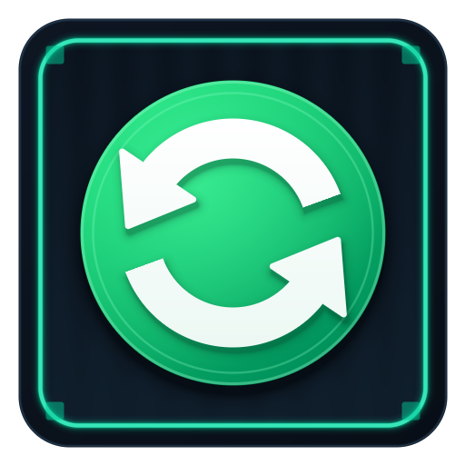

Resilio Sync v3 is now free for everyone, but the official Docker Hub image stopped at v2.8.1.
This container packages the SHA256-pinned Resilio Sync v3 binary with three static Rust supervision tools
(rslsync-init, rslsync-config, rslsync-health) that protect your NAS ACLs,
catch bad sync.conf edits before they crash the daemon, and track live WebUI port changes automatically.
chown -R calls on /sync. Synology ACLs and Unraid arrays stay untouched.http.port.std Rust binaries (rslsync-init, rslsync-config, rslsync-health) with zero external crates.Resilio made v3 free for personal and commercial use, removing the old Pro vs. Home restrictions. However, deploying v3 in a container hits four real-world pitfalls that this image solves out of the box.
resilio/sync on Docker Hub is frozen on 2.8.1.
Resilio only ships v3 (3.1.2.1076-1) as .deb and .rpm packages. Furthermore, the rslsync ELF binary has a 17.4 MB WebUI ZIP archive appended to the end of the executable — standard container build pipelines that run strip corrupt the binary and break the WebUI.
GUI port changes write to /config/storage/http.port, not sync.conf.
Third-party images that hardcode nc -z localhost 8888 in their healthcheck fail as soon as you change the WebUI port in Preferences, causing Docker to restart the container in a loop. rslsync-health reads http.port first and falls back to sync.conf.
/downloads vs /sync)Mismatched files_default_path breaks the WebUI folder picker.
Images like linuxserver/resilio-sync ship "directory_root": "/sync/" alongside "files_default_path": "/downloads". Because /downloads is outside /sync/, creating folders in the GUI fails. Here, both default cleanly to /sync and are verified pre-flight by rslsync-config.
Never run chown -R on multi-terabyte NAS shares.
Recursive chown -R on /sync strips Synology DSM Btrfs synoacl permissions and stalls Unraid shfs mounts. rslsync-init only applies recursive ownership to /config and automatically seeds @eaDir, #recycle, and .Recycle.Bin into /sync/*/.sync/IgnoreList.
Copy-paste configurations tailored for Unraid, Synology NAS (DSM 7.2+ Container Manager), Fedora Server (Podman Quadlet + SELinux), and Docker/Podman CLI.
Pre-configured with PUID=99 (nobody), PGID=100 (users), UMASK=002, and health port 9198.
curl -fsSL https://raw.githubusercontent.com/UberMetroid/resilio-sync-container/main/unraid-template.xml \ -o /boot/config/plugins/dockerMan/templates-user/my-resilio-sync.xml
resilio-sync-container → Apply./config to /mnt/user/appdata/resilio-sync/config and /sync to /mnt/user/sync.9198 avoids conflicts with manta (:9199), barracuda (:9299), and urchin (:9399).Preserves Btrfs synoacl permissions and excludes @eaDir, #recycle, and #snapshot.
1. Raise Synology's low 8192 inotify limit (Control Panel → Task Scheduler → Triggered Task → Boot-up as root):
sysctl -w fs.inotify.max_user_watches=524288
2. Deploy in Container Manager → Project (assets/compose.synology.yaml):
services:
resilio-sync:
image: ghcr.io/ubermetroid/resilio-sync-container:latest
container_name: resilio-sync
hostname: synology-resilio-sync
restart: unless-stopped
entrypoint: ["/bin/rslsync-init"]
security_opt:
- no-new-privileges:true
environment:
- PUID=1026
- PGID=100
- UMASK=002
- DEVICE_NAME=synology-resilio-sync
- WEBUI_PORT=8888
- SYNC_PORT=55555
- HEALTH_PORT=9198
- SEED_IGNORE_LIST=true
- DROP_PRIVS=true
ports:
- "8888:8888/tcp"
- "55555:55555/tcp"
- "55555:55555/udp"
- "127.0.0.1:9198:9198/tcp"
volumes:
- /volume1/docker/resilio-sync/config:/config:rw
- /volume1/sync:/sync:rw
healthcheck:
test: ["CMD", "/bin/rslsync-health", "--check"]
interval: 30s
timeout: 5s
retries: 3
Uses UserNS=keep-id:uid=1000,gid=1000 and SELinux :Z / :z volume relabeling.
# 1. Create host directories sudo mkdir -p /var/lib/resilio-sync/config /srv/sync sudo chown -R 1000:1000 /var/lib/resilio-sync/config /srv/sync # 2. Install systemd Quadlet unit sudo curl -fsSL https://raw.githubusercontent.com/UberMetroid/resilio-sync-container/main/assets/resilio-sync.container \ -o /etc/containers/systemd/resilio-sync.container sudo systemctl daemon-reload sudo systemctl start resilio-sync # 3. Open WebUI and P2P ports in firewalld sudo firewall-cmd --permanent --add-port=8888/tcp \ --add-port=55555/tcp --add-port=55555/udp sudo firewall-cmd --reload
Includes ExecStop=/usr/bin/podman exec resilio-sync /bin/rslsync-init --shutdown for clean SQLite WAL checkpointing.
Works on any Linux host; synthesizes /etc/passwd entries dynamically for any PUID:PGID.
docker run -d \ --name=resilio-sync \ --restart=unless-stopped \ --security-opt=no-new-privileges:true \ --entrypoint=/bin/rslsync-init \ -p 8888:8888/tcp \ -p 55555:55555/tcp \ -p 55555:55555/udp \ -p 127.0.0.1:9198:9198/tcp \ -e PUID=1000 \ -e PGID=1000 \ -e UMASK=002 \ -e DEVICE_NAME=resilio-sync \ -v /srv/resilio-sync/config:/config:rw \ -v /srv/resilio-sync/sync:/sync:rw \ ghcr.io/ubermetroid/resilio-sync-container:latest
What to expect the first time you open http://<host-ip>:8888/gui/.
Open http://<host-ip>:8888/gui/
Set your WebUI administrator username and password. Empty passwords are rejected by default ("allow_empty_password": false).
.btskey LicensePreferences (Gear Icon) → License → Apply license
Upload your free Resilio Sync v3 .btskey file. The license and device identity are saved inside /config/storage and persist across container updates.
/syncFolder picker opens directly inside /sync
Any existing shared folder with a .sync/IgnoreList automatically receives exclusions for @eaDir, #recycle, #snapshot, .Recycle.Bin, and .Trash-*.
How to get full wire-speed transfers across your local subnet and remote WAN peers.
| Port / Protocol | Service | Operational Guidance |
|---|---|---|
55555/tcp & 55555/udp |
P2P Sync Listener (TCP + μTP) | Publish both TCP and UDP. Forward 55555/tcp and 55555/udp on your router so remote peers connect directly instead of falling back to slow relay servers. |
239.192.0.0:3838/udp |
LAN Multicast Discovery | Docker/Podman bridge NAT blocks multicast packets. In bridge mode, peers still transfer at full LAN speed once discovered via tracker or by adding your NAS IP (192.168.x.x:55555) under Folder Preferences → Use predefined hosts. For trackerless LAN multicast, run with --network=host and -e HEALTH_BIND=127.0.0.1. |
8888/tcp |
WebUI (/gui/) |
If you change the WebUI port inside the GUI, rslsync writes the active port to /config/storage/http.port. rslsync-health detects it automatically. |
9198/tcp |
Health & Status API (/status) |
Returns JSON health status (HTTP 200 when healthy, HTTP 503 when unhealthy). Used by /bin/rslsync-health --check. |
Configure on first boot with environment variables, or edit /config/sync.conf live — rslsync-init validates changes every 5 seconds with rslsync-config before restarting the daemon.
| Variable | Default | Purpose |
|---|---|---|
PUID / PGID | 99 / 100 | Runtime UID & GID (99:100 Unraid, 1026:100 Synology, 1000:1000 Fedora) |
UMASK | 002 | Octal mask (002 = 775 dirs / 664 files) |
DEVICE_NAME | resilio-sync | Peer name rendered into /config/sync.conf |
WEBUI_PORT | 8888 | Initial WebUI port in /config/sync.conf |
SYNC_PORT | 55555 | P2P TCP/UDP listening port (1024..=65535) |
HEALTH_PORT | 9198 | Health HTTP server port (:9198/status) |
HEALTH_BIND | 0.0.0.0 | Health bind IP (use 127.0.0.1 in host net mode) |
SEED_IGNORE_LIST | true | Seed NAS metadata exclusions into .sync/IgnoreList |
DROP_PRIVS | true | Drop from root to PUID:PGID via setpriv |
Query :9198/status from any monitoring tool or dashboard:
$ curl -s http://localhost:9198/status
{
"status": "healthy",
"daemon_pid_alive": true,
"webui_up": true,
"sync_port_up": true,
"storage_initialized": true,
"webui_port": 8888,
"sync_port": 55555,
"inotify_max_watches": 524288,
"uptime_seconds": 86420
}
Test health or validate /config/sync.conf via CLI:
docker exec resilio-sync /bin/rslsync-health --check docker exec resilio-sync /bin/rslsync-config --config /config/sync.conf
Every supervision binary is pure standard-library Rust (Cargo.lock has zero external dependencies) and every package input is pinned by cryptographic hash.
# 1. Run the Rust test suite, zero-panic Clippy gate, and formatting check cargo test --workspace --all-targets cargo clippy --workspace --all-targets -- -D warnings -D clippy::unwrap_used -D clippy::expect_used -D clippy::panic cargo fmt --all -- --check # 2. Build reproducible OCI container via Nix Flake nix build .#default docker load < result # 3. Or pack with GNU Guix (manifest.scm) RUSTFLAGS="-C target-feature=+crt-static" cargo build --release --workspace --target x86_64-unknown-linux-gnu mkdir -p prebuilt && cp target/x86_64-unknown-linux-gnu/release/rslsync-* prebuilt/ curl -fsSL "https://linux-packages.resilio.com/resilio-sync/deb/pool/non-free/r/resilio-sync/resilio-sync_3.1.2.1076-1_amd64.deb" -o /tmp/resilio-sync.deb echo "31b623897fef0682b97f6274d124a7d7003c5d0db47f3fe3407a5c45258fbcbb /tmp/resilio-sync.deb" | sha256sum -c - ar x /tmp/resilio-sync.deb && tar -xf data.tar.* && cp usr/bin/rslsync prebuilt/rslsync guix pack -f docker --entry-point=/bin/rslsync-init -S /bin=bin -S /etc=etc -S /share=share -m manifest.scm